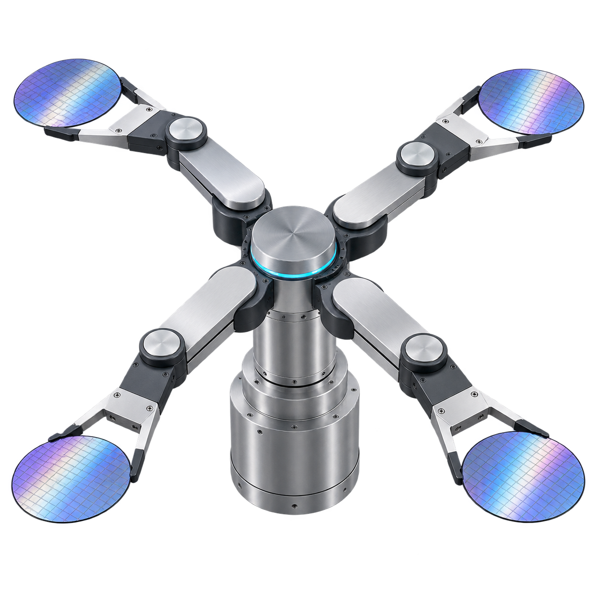

以「平台 + 机型插件」为底座，覆盖新机型适配、整机软件交付、产线联机与出厂前仿真联调的完整生命周期。
平台层能力全部复用，机型研发只做「差异部分」——这是平台化架构对交付周期最大的贡献。
按设备构成编写 sc.xml：腔体、Load Port、机械手、轴、传感器以组件挂树，参数表 ec.xml 自动生成。
复用 FCD / Reje / ADS 现成驱动，导入机型 IO 点表 CSV，PLC 命令块 / 状态块对接联调。
机型模块 OnScan 状态机 + 搬运调度 + 互锁规则表，手动操作页与 HMI 控件随客户端插件交付。
GEM 采集器快照生成数据模型，SecsSmoke 冒烟跑通后对接 EAP 联调，晶圆账核对交付。
平台首个落地机型：多腔体清洗设备，涵盖上料 Load Port、晶圆传输机械手、清洗腔工艺与 E84 出入口交接。 软件按「平台 + 机型插件」拆分为后端模块、客户端插件与机型专属控件三件套，平台代码零改动。

设备进厂联机是验收红线。xyz 的做法是把风险全部前置到出厂之前。
按客户 EAP 事务清单逐条映射到 CEID / RPTID 报告定义，数据模型评审通过后再动代码。
自研协议栈双端能力：本机起 Host 模拟器与设备端互打，S1/S2/S5/S6 事务全跑通再上产线。
报文级日志双轨落盘，联调现场按 item 定位分歧点，配合客户 EAP 工程师逐项关闭问题。
没有设备、没有 PLC 也要能开发——平台配套统一仿真器与十个冒烟测试工程，软件进度不被硬件到货卡住。
| 工具 | 用途 |
|---|---|
统一仿真器 | 本机模拟 PLC 与设备部件行为，支撑界面与流程开发 |
SecsSmoke | SECS/HSMS 链路与标准事务冒烟 |
GemCollectorSmoke | GEM 五类采集器快照与编号合并验证 |
WaferLedgerSmoke / RfidSmoke | 晶圆账记账与 RFID 识读链路验证 |
DataCenterSmoke / LogPipelineSmoke | 数据入库、查询与日志管道验证 |
EventBusSmoke / OperationWaitSmoke / IoIndexSmoke | 事件总线、流程等待与 IO 点表索引验证 |
AdsRouter | 轻量 ADS 路由服务，替代倍福官方路由组件的部署依赖 |
机型构成、IO 规模、客户 EAP 清单——三项信息即可输出可执行的分阶段交付方案。